Префектура Оита · Беппу, Каннава · еда
Otto e Sette Oita: итальянская кухня на пару «адских» источников Беппу
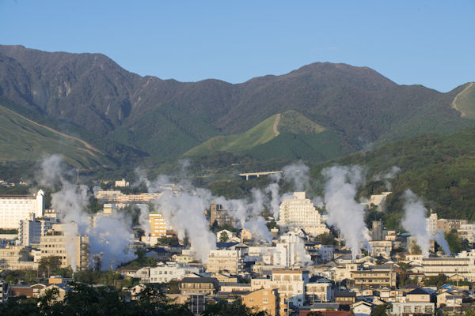
В квартале Каннава в Беппу еду издавна готовят на пару горячих источников. Этот способ, дзигоку-муси, увлёк итальянского шефа, и он сделал его основой своей кухни.
Пар
Кухня, которую не повторить в другом месте
Префектуру Оита знают прежде всего по онсэнам, но здесь хватает и рыбы, и горных продуктов. В Каннаве, квартале онсэнов в Беппу, с середины эпохи Эдо готовят дзигоку-муси: овощи, рыбу и яйца кладут в каменный котёл над выходом горячего пара. Этот старинный способ и стал главным приёмом ресторана Otto e Sette Oita.
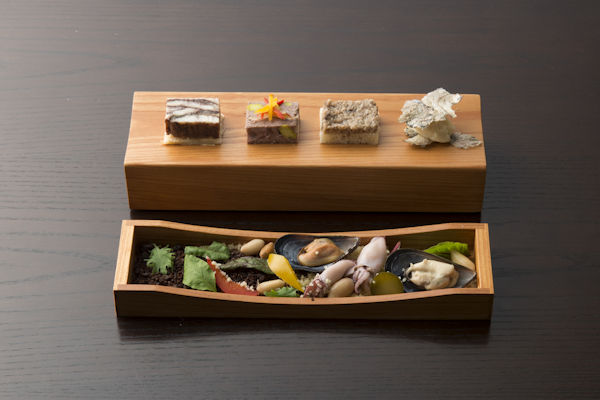
Шеф Тэцуя Какэхаси раньше руководил кухней Sansou Murata, известного рёкана в Юфуине, и в других заведениях. Почти всё, что он готовит, выращено или поймано в префектуре Оита: одни только овощи ресторан закупает больше чем у 50 фермеров. Продукты хороши и сами по себе, но шеф превращает их в то, что сам называет «адской итальянской кухней», и такую еду можно попробовать только здесь. На ужин подают сет «омакасэ» на выбор шефа, в нём продукты Оиты сочетаются с местными блюдами и меняются по сезону.
Ужин
Сет из продуктов Оиты
Ужин открывает «Прелюдия». На деревянной планке четыре закуски: картофель «Китаакари» из Юфуина между хрустящими пластинками из сардины, брускетта с пастой из шиитакэ, выращенных на брёвнах, паштет из кабана и оленя, пирожок с угрём из Юфуина.
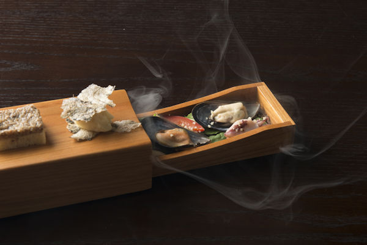
В выдвижном ящичке лежат мидии из Оиты, копчёные маленькие кальмары и другие морепродукты. Дым запускают внутрь заранее, чтобы копчение было лёгким, а когда гость открывает ящик, он стелется над столом.
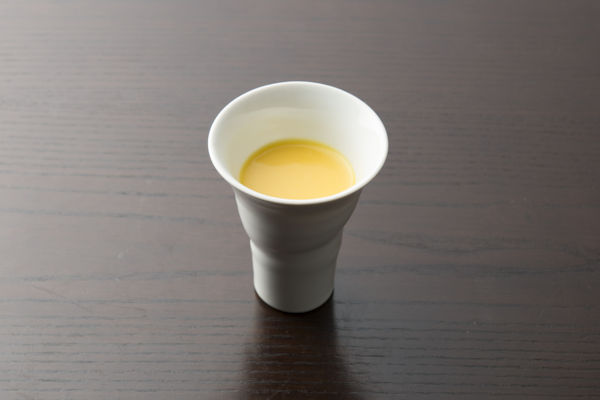
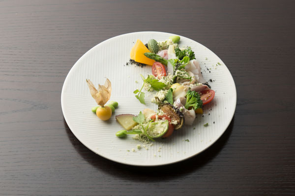
Суп из тыквы «Сорин-кабоча», местного сорта, устроен совсем просто: тыкву обжаривают и разбавляют водой из источника. Минералы в ней работают как бульон, и вкус получается неожиданно глубоким.
Название «Кирасу-мамэси» мало что скажет даже японцу. Так в Оите называют рыбу, обвалянную в окаре, соевом жмыхе. Шеф маринует ставриду в соке кабосу и подаёт с двумя видами окары, с бамбуковым углём и с петрушкой, пропитанной оливковым маслом. Рядом около двадцати видов местных овощей.
Фузилли с «дзуйки» и ботвой дайкона делают с сушёными стеблями таро. В Оите их едят с давних времён. Основа соуса это бульон из морепродуктов, например из гребешков «хиоги», которых здесь много, но вкус получается мягким, и главным в нём остаётся «дзуйки».
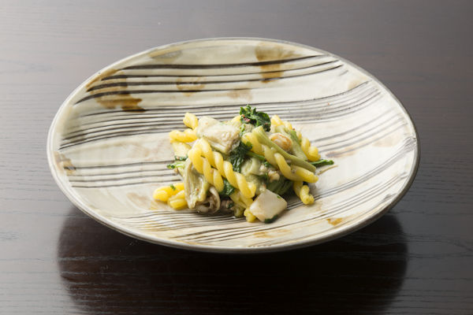
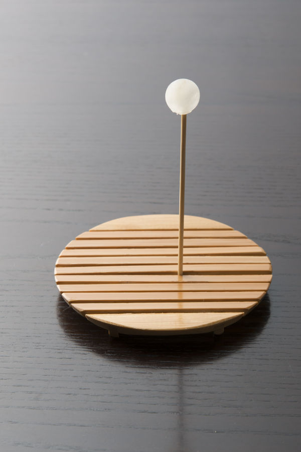
Перерыв между блюдами отмечает сорбет из сушёной полыни, заваренной в чае. По сезону его делают и из других трав, например из ромашки.
Горячее
Рыба из «ада» и говядина Оиты
Главное блюдо «адской» кухни это тай, морской лещ, на пару источников. Рыбу выдерживают в солёном кодзи, рисовой закваске, и отправляют в каменный котёл, откуда она выходит пышной и сочной. Соус шеф делает из сырого сладкого перца и кодзи, а иногда из чернил каракатицы или томатов.
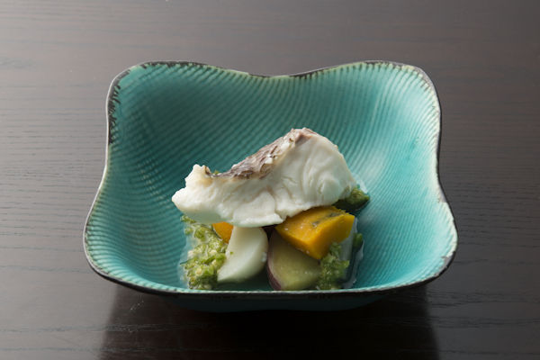
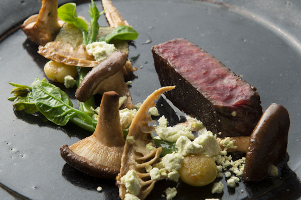
Для ростбифа берут сирлойн японской чёрной говядины с фермы Ямасита в Оите. Мясо жарят на местном сливочном масле, и в той же сковороде готовят овощи, простые и очень вкусные.
На десерт подают тарт татен из груши «Ниитака», хрустящего сорта. Мороженое к нему иногда делают на козьем молоке.
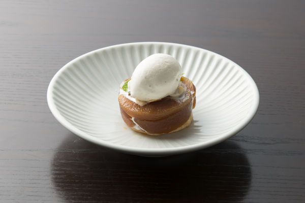
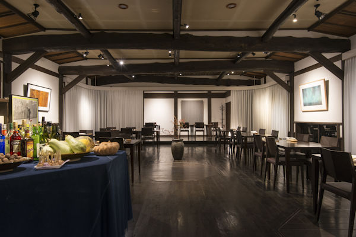
Ресторан стоит на территории старого рёкана Yanagiya, и в зале с тёмными балками сохранилась атмосфера старой Японии.
Итог
Ради одного ужина
В каждом блюде вкус продукта раскрыт просто, а послевкусие остаётся итальянским. «Кирасу-мамэси» удивляет смелой идеей, а паста, классика итальянской кухни, у шефа приобретает мягкий японский вкус. Дзигоку-муси здесь главное, но и остальные блюда построены на продуктах Оиты. Поехать в Беппу ради одного ужина вполне разумный план.
Otto e Sette Oita
- Адрес
- префектура Оита, Беппу, Каннава, Ида, 2-куми
- Телефон
- +81 977-66-4411
- Часы работы
- 11:30–14:00 (последний заказ), 18:00–21:00 (последний заказ)
- Выходные
- вторник
Фото: Хироси Мидзусаки.